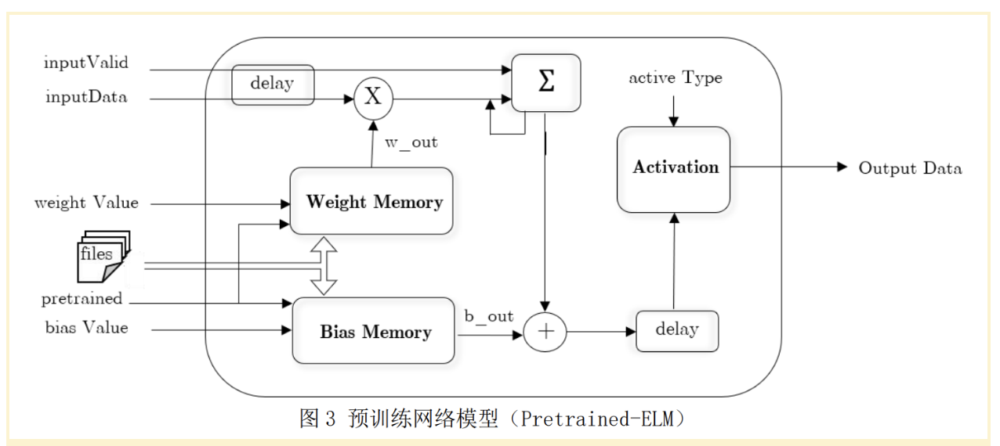
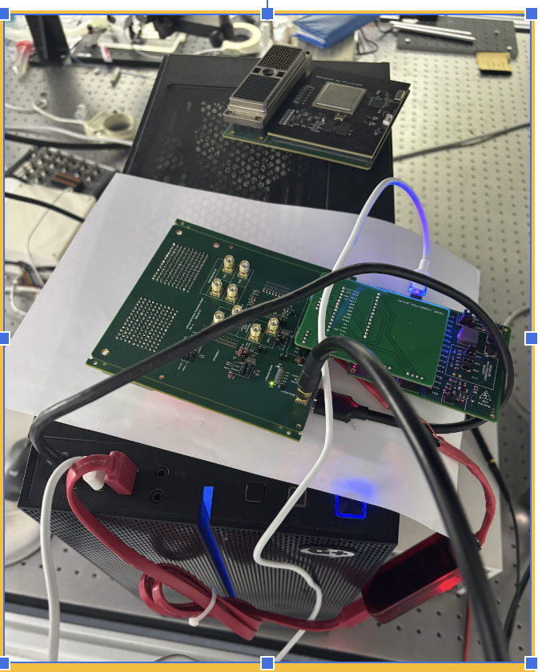
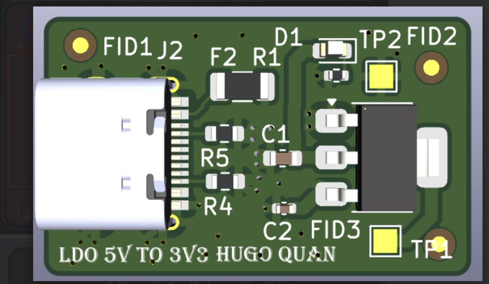
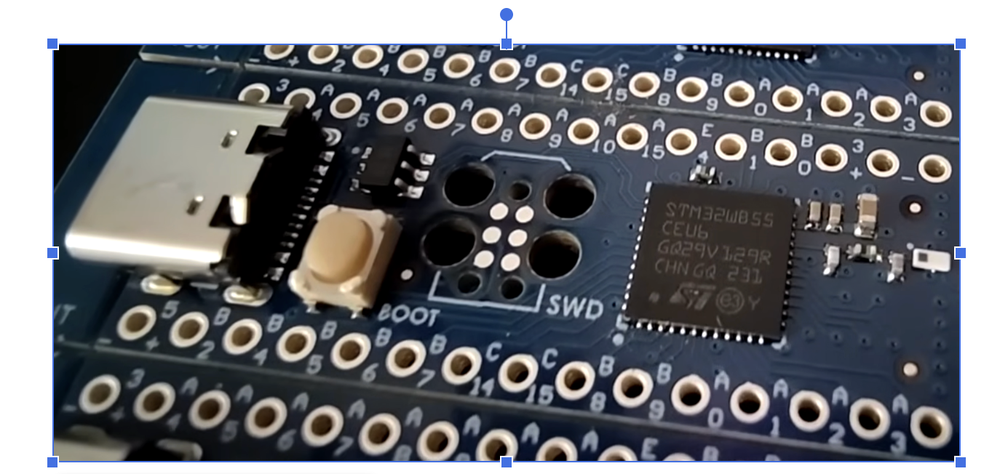
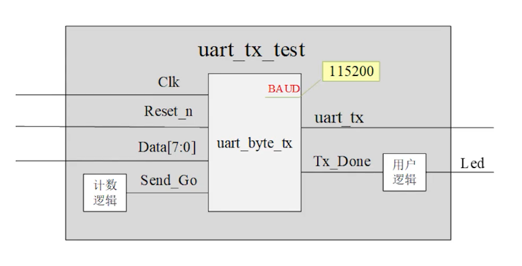
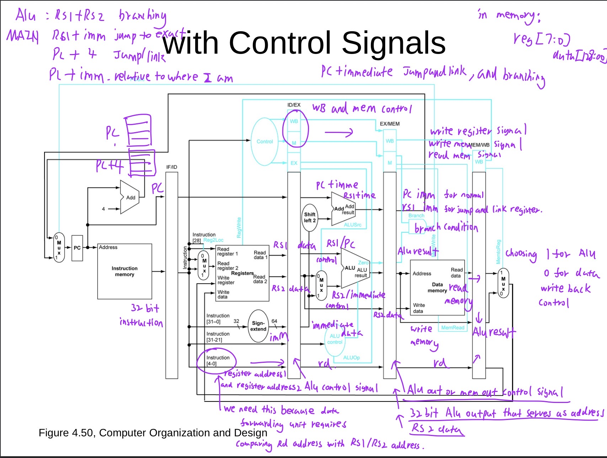
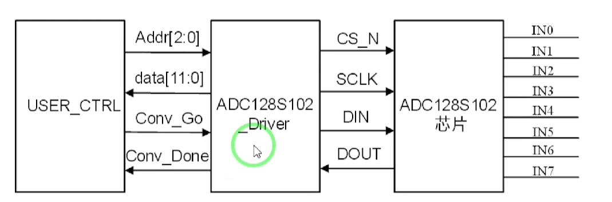

Hugo Quan
Electrical Engineering Student
Bridging the gap between hardware and software. Specializing in Chip Design, Embedded Systems, and FPGA Development.
Targeting Roles in: Apple, Google, Nvidia

Bridging the gap between hardware and software. Specializing in Chip Design, Embedded Systems, and FPGA Development.

Designed a hardware accelerator for machine learning (Extreme Learning Machine) on an FPGA. Implemented HW/SW co-design using ARM-Cortex for control and FPGA for parallel matrix calculations.

Developed a portable diagnostic device. Engineered the full signal chain from high-voltage excitation to digital echo capture.

Designed a quick and convient low drop out Regulator as well a high speed custom usb HUB for team day to day usage. Managed strict impedance matching when neccessary for differential pairs and integrated power protection circuits.

End-to-end design of a Bluetooth-capable development board. Managed entire lifecycle from component research to firmware programming.

End-to-end design of a uart tx rx module. Managed entire lifecycle from coding to simulation and verification using Xilinx Vivado ILA and testbenches.

End-to-end design of a 5 staged piplining CPU with advanced hazard detection and resolution. Managed entire lifecycle from coding to simulation and verification using Xilinx Vivado ILA and testbenches.

End-to-end design of a high-precision ADC controller with deterministic timing and zero-jitter communication. Managed entire lifecycle from coding to simulation and verification using Xilinx Vivado ILA and testbenches.

Built a complete industry-standard UVM testbench from scratch to verify a dual-clock Asynchronous FIFO. Implemented the full verification hierarchy — transaction, driver, monitor, scoreboard, reference model, and virtual sequencer — achieving zero UVM errors across both test cases.

Developed a standalone mini-television. Combined high-level software for video encoding with hardware integration (audio amp, USB breakout) and custom 3D printed enclosure.

A console-based strategy game inspired by Minesweeper. Focused on efficient memory management and algorithmic logic for grid generation and user interaction.

Assisted in developing a suite of software tools for AutoCAD/CAD environments. Designed to streamline electrical design workflows and improve engineering efficiency.